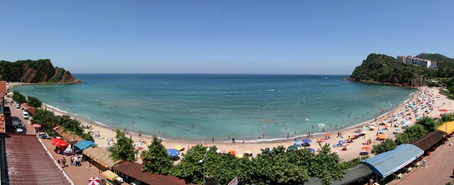

COĞRAFİ KONUM
Çakraz, Batı Karadeniz Bölgesinde Bartın İli’ne bağlı Amasra İlçesi’nin 14 km doğusunda yer alır. Kuzeyini Karadeniz çevrelerken, güneyinde ise Küre dağları bulunmaktadır. Çakraz’ın deniz seviyesinden ortalama yüksekliği 25 m’dir. Bölgenin orta kısımlarına rastlayan Çakraz Ovası bir dere ile ikiye bölünür.

BİTKİ ÖRTÜSÜ (FLORA)
Çakraz’ın yüzölçümünü ormanlar, tarımsal alanlar ve köylere ait yerleşim merkezleri kaplamaktadır.
Bitki Coğrafyası bakımından oldukça karışık bir durum gösteren Çakraz, hem Karadeniz, hem de Avrupa Sibirya bitki coğrafyasına ait bitki grupları ve türlerini barındırır.
Çakraz’ın bitki örtüsünü genellikle yayvan ve iğne yapraklı ağaçlar oluşturur. Sahilden 600 metre yüksekliğe kadar alanın karakteristik ağaçları meşe, kayın, kayacık ve gürgendir. Daha üst bölümlerde kısmen kestane, çam türleri, kısmen köknar ve şimşir, sahil şeridinde fıstık çamı ve fındık plantasyonları yaygındır.
Diğer ağaç ve bitki türleri ise kızılcık, muşmula, böğürtlen, ıhlamur, kuşkonmaz, defne, sarmaşık, ormangülü, eğrelti otu, papatya, sütleğen, yonca, kuşburnu, adaçayı, kekik ve yüzlerce farklı floradır.
TURİSTİK DEĞERLER VE TURİZM ÇEŞİTLİLİKLERİ
.jpg)
PANORAMİK DEĞERLER
Çakraz isminin neyi çağrıştırdığı bilinmiyor. Fakat Çakraz dallardaki yeşili, göğün engin maviliğini, denizin uçsuz bucaksız güzelliğini, dağların denize değmesini hissetmedir. Ya da Çakraz “İnce Mehmed” romanını İsfendiyer Dağlarının denize değen eteklerinde yazabilmektir. Evet, Çakraz sıra dağlar, sıra tepeler, minyatür bir ova, deniz ve gökyüzü demektir. Köy üstü, Topallar, Bozköy ve Düz İlit Tepeleri otantik dokunun baki noktalarını oluşturur. Tepelerin ve arazinin yarısı kızıl, diğer yarısı da kahverengini sunar. Dokuz köy bir benek misali ovada, bayırda, tepelerde konuşlanmış ve gizemlerle doludur. Kızılca Yokuş çamurlarının inatçılığını, oradan geçenler bilir. O inatçı çamurlar “Çakraz çökelez arabası göveles” söylemini üretmiştir. Karadeniz’e gelenler çok iyi bilirler ki, kıyılardaki kumsallar kendilerini gizlerler. Arabaların geçtiği yollardan görünmezler. Ama aşağılara yürünürse önce evlerin damlarındaki kırmızı kiremitler ve sonrada kumsallar ortaya çıkar. Aynı Çakraz ve Delikli Şile kumsallarında olduğu gibi.
Hele Çakraz plajı bütün sıcaklığıyla bedenleri sarmak ister. 1960 yılından bu yana İsveçli, Finlandiyalı, Belçikalıları sardığı gibi. Aynı plaj Osmanlılardan 20.yy’ın ilk yarısına kadar sürtme sandalların, çektirmelerin ve slapuryaların imal yeriydi. Mitolojideki yunusların, sebebiyet verdiği yıldızın ismiyle de zaman zaman anılmıştır. Yani Şimal Yıldızı. Şimal Yıldızı’ndaki Karadeniz kara değil, ya mavi, ya yeşil ya da turkuaz renklidir. Kara kısmı ak ve kahverengine bürünmüş. Bazı kısımlarına yeşille sürme çekilmiş. Erik, elma ve armut çiçekleri bembeyaz bir gelinlik gibi ağaçlarını örter. Serçe, çekirge ve Ağustos böceği sesleri ortalığı doldurur. Bülbüller en güzel şarkılarını sanki Çakraz için söylerler. Anlatılanlar yaza ait görüntüler. Ya sonbahar! Hem şölen, hem de hüzün sunar. Sabahları ay, sararmış ağaçlara. Selam vererek gökyüzüne çekilir. Sular üzerinde hep yaprak taşır. Su için yaprak bir yük değil, yitirilen bir dosttur.
Grup vaktini ise söylemek gerçekten zor. İlk önce Bozköy’ünün koyu gölgesi Şeyhlere ve Ovaya düşer. Göğün maviliği, turkuaz suların rengi usulca sarıya çalar. Güneş adeta kızıl bir top olur. Delikli Şile ve Ali Obası ağır ağır hüzne boğulur.
Başka bir romantik görünüm ise yağmur ve sistir. Sis kış ve baharların esrarlı tezahürüdür. Beyaz bir tül gibi denizden gelir ve ovayı örter. Bakı noktaları o sisin üzerine abanarak göğe yükselirler.
Bu manzaralar görenlere hep tiryakilik vermiştir. Onun için Çakraz, 1960 yılından bu tarafa Karadeniz’in küçük bir turizm köşesidir.
DENİZ TURİZMİ
Çakraz’da deniz turizmi Haziran’da başlayıp Ekim’in sonuna kadar sürer. Bozköyaltı, Çakraz ve Delikli Şile plajları en çok bilinen plajlarıdır. Bu plajlar dışında çevrede deniz turizmi için uygun sayısız koy bulunmaktadır.
YAYLA TURİZMİ
Yazılı Gökçeağaç ve Gürcüoluk Dağlarının içinde bulunan yaylalar ise yayla turizmini de Çakraz ve çevresinde mümkün kılmaktadır.
MAĞARA TURİZMİ
Çakraz ve yöresi karbonatlı kayaçların yoğun olduğu bir yer olarak dikkati çeker. Bu jeolojik yapı mağara oluşumunu kolaylaştırmıştır. Takriben 7 km. uzaklıktaki Gürcüoluk Mağarasının Mimari, Elektrifikasyon ve Çevre Düzenlemesi projelerinin yapılandırma çalışmalarına Kültür Bakanlığına bağlı DÖSEM tarafından başlanmıştır. Gürcüoluk Mağarası 53 doğal odadan meydana gelmekte ve dikit sarkıt, traverten, soğan ve makarna oluşumlarla donanmıştır. Türkiye’de önemli mağaralar arasında sayılır. Yöre turizmine önemli katkılarda bulunacağı tahmin edilmektedir.
TREKKİNG
Otellerin yoğun olduğu Çakraz koyundan ile Delikli Şileden başlamak üzere dağlara doğru birçok trekking rotası bulmak mümkündür. Örneğin;
· Çakraz, Delikli Şile, Kemen Tepesi ve Göçgün’e doğru bir parkurdur. Ortalama 2 saatlik bir zaman alır. (Sadece gidiş).
· Çakraz, Kızılca yokuşu. Ali Obası ve İncivez Köyü ikinci bir parkur. Ortalama 3 saatlik bir zaman dilimini içerir(Sadece gidiş).
· Çakraz, Bozköy Virajı, Guypınar ve Gürcüoluk Mağarası parkurunda 2,5 saatlik bir zaman kullanılır. (Sadece gidiş).
Trekking için patika yolları bilen Çakraz’lı yerel rehberler tırmanmayı zevkli hale getirecektir.
DENİZ MOTORU
Çakraz, Delikli Şile’de birçok sandal ve deniz motoru bulunmaktadır. Buralardan kiralık motorlarla;
· Çakraz- Değirmenağzı- AMASRA-Tavşan Adası-Katır izine kadar olan mesafe 1,5 saatte gidilmektedir.
· Çakraz- Delikli Şile- Göçgün- Gökyar- Çambu – Tekkeönü- Kurucaşile rotasına ise 2 saatte gidilmektedir.
* Bu yazı İsmail Aktaş’ın çalışmasından beslenmiştir. İsmail AKTAŞ